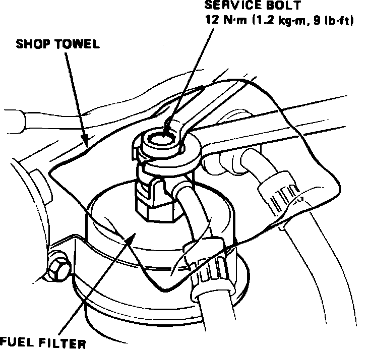

Fuel Pressure Release: Service and Repair
Fig. 1 Relieving fuel system pressure:

Do not relieve system fuel pressure with engine running.
1. Disconnect battery ground cable.
2. Loosen the 6 mm service bolt on top of the fuel filter one complete turn, while holding the special banjo bolt using a suitable wrench. Place a suitable towel over the 6 mm bolt before relieving fuel pressure.
3. Replace washer between service bolt and banjo bolt whenever service bolt is loosened.